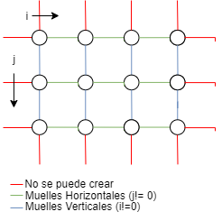
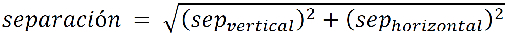
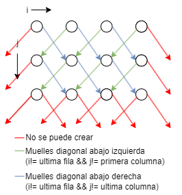
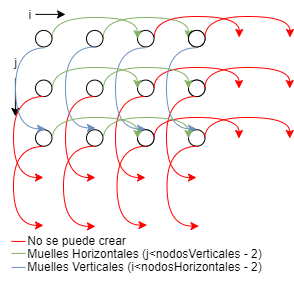
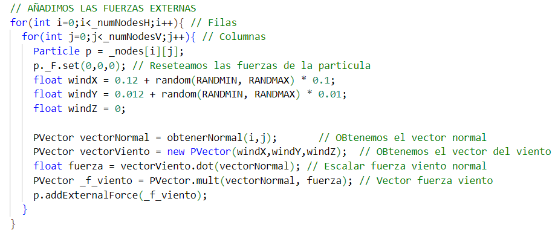

Ejercicio 2: Banderas
Enlace para ver el codigoEn este ejercicio, he creado 3 banderas con 3 estructuras de mallas distintas para compararlas y ver qué efecto tiene cada una de estas estructuras.
Las tres estructuras de muelles usadas son las siguientes:
- Structural: Usada por la bandera roja. Las partículas se unen con sus vecinos verticales y horizontales:
- Shear: Usada por la bandera verde. Las partículas se unen con sus vecinos diagonales
- Bend: Usada por la bandera azul. Cada partícula se une con las partículas que se encuentran a una distancia de 2 partículas, horizontal y verticalmente.
Los parámetros utilizados para el video han sido los siguientes:
- TS: 0.001
- G: 98.1
- M: 0.5
- RANDMIN: 500
- RANDMAX: 1000
- Ke: 200
- Kd: 0.1
- N_H: 20
- N_V: 20
- D_H: 8
- D_V: 4
DeformableObject
Esta clase es la que almacena la malla del objeto deformable (en nuestro caso, cada bandera). Contiene los siguientes elementos:
- Número de nodos verticales y Horizontales
- Tamaño de la separación entre nodos verticales y horizontales
- Constante elástica y constante de amortiguamiento de sus muelles
- Estructura de muelles del objeto
- Color
- Matriz de partículas
- Lista de muelles que contiene
- Grosor de las cuerdas
En el constructor se inicializan las variables. De este tenemos que destacar las siguientes funciones:
- crearMalla(posini): Se encarga de inicializar la matriz de partículas en función de las cantidades de nodos verticales y horizontales. Para los bordes de la última columna establecemos que las partículas están ancladas y sin gravedad.
- crearSpringLayout(springLayout): Se encarga de crear la lista de muelles en funcion del layout del objeto. Las estructuras que se pueden crear son las siguientes:
-
Structural: Para crear este layout, se recorren todas las partículas de la matriz en un doble bucle for y en cada iteración se añade un muelle entre la partícula actual con la vecina que se tiene a la izquierda (en una columna menos, j-1) (salvo en el caso de la primera columna) y otro con la vecina que se tiene arriba (en una fila menos, i-1) (salvo en el caso de la primera fila)
 -
Shear: Para crear esta estructura, calculamos primero la distancia de separación entre nodos, que será la distancia en diagonal. La calculamos con el teorema de Pitágoras:
Una vez tenemos la separación se recorren todas las partículas de la matriz y en cada iteración del doble bucle for se crea un muelle entre la partícula actual y la que se encuentra abajo a la izquierda (en una fila más y una columna menos, i+1 ,j-1) (salvo en el caso de que la partícula este en la última fila y primera columna) y otro muelle con la partícula actual y la que se encuentra abajo a la derecha (en una fila más y una columna más, i+1, j+1) (salvo en el caso de que la partícula este en la última fila y última columna).
 -
Bend: Para crear esta estructura, primero llamamos a la función crearStructural() ya que sino la malla se dividirá en dos al tener los vecinos conectados de dos a dos. Al recorrer todas las partículas de la matriz, en cada iteración crearemos los muelles horizontales(i, j+2) (salvo los casos en los que la columna de la partícula sea la antepenúltima, j < nodosVerticales-2) y los muelles verticales (i+2, j) (salvo los casos en los que la fila de la partícula sea la antepenúltima, i < nodosHorizontales-2).

Según el tipo de renderizado del programa en la función render() se dibujará la malla o en modo sólido o en modo wireframe. En el modo wireframe podemos ver correctamente la disposición de muelles según la estructura de cada bandera.
En la función update() realizamos los siguientes pasos:
-
Añadimos las fuerzas externas: A todas las particulas le añadimos la fuerza del viento que lo hacemos con el siguiente codigo:
La fuerza del viento es proporcional al producto escalar entre el vector viento y el vector normal en la partícula.
-
Añadimos las fuerzas internas actualizando todos los muelles de la bandera.
-
Actualizamos las particulas de la malla.